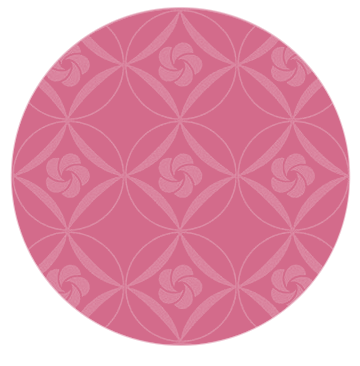
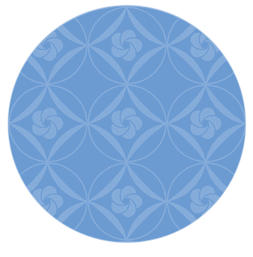

今日のこころに、ひと色。

花がほころぶころの
梅重（うめがさね）
梅重（うめがさね）
はじめに
色を知ることは、
季節をゆっくり眺めること。
古くから受け継がれてきた色名や、日々の暮らしで出会う色。
そのひとつひとつを、梅子の言葉で綴ります。
THE COLOR INDEX
色の図鑑
名前をたどって、今日の一色を。
掲載色は少しずつ追加しています。

A COLOR FOR YOUR CONSTELLATION
星座と色
夜空を見上げるように、自分の色を見つけて。
♎
AUTUMN · BALANCE
✳天秤座に寄り添う色
薄梅鼠（うすうめねず）
気持ちをそっと整える、淡い梅の灰色。
星座と色の組み合わせは、梅子の色暦による季節の提案です。
A LITTLE COLOR TO TAKE HOME
色を、暮らしのそばに。
色暦から生まれた小物や作品を、こちらでご紹介します。
色をたよりに、季節と暮らす。
梅子の色暦